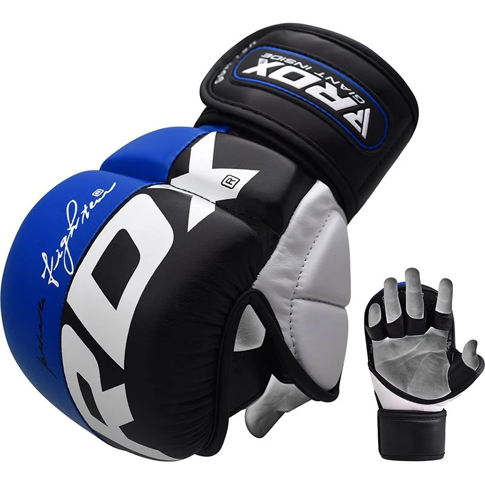
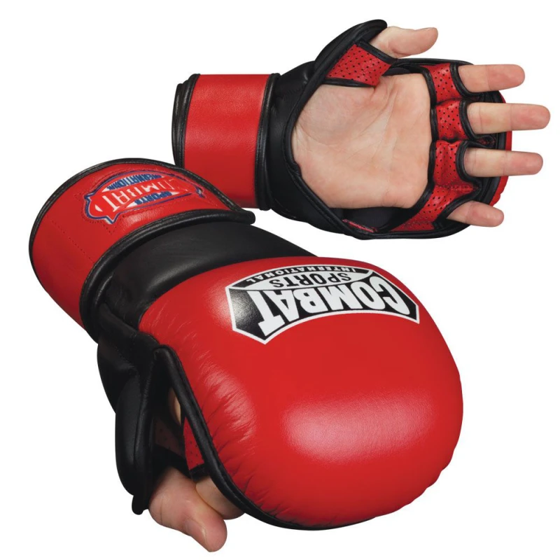

12 czerwca 2024 | MMA, Boks i kickboxing
Boks jest w odwrocie, MMA bije rekordy popularności? Często można się spotkać z podobnymi opiniami, ale ich jest w nich prawdy? Czy rzeczywiście fani pięściarstwa muszą przejmować się tym, że ich dyscyplina przeżywa zapaść, a sympatycy MMA mogą świętować? Jest to trochę bardziej skomplikowane.
Boks i MMA to dyscypliny, które mają jeden znaczący wspólny mianownik, ale w końcu jak bardzo mogą różnić się dwa sporty, w których z grubsza chodzi o to, by w
fizycznej walce pokonać rywala? Wbrew pozorom bardzo, i to nie tylko jeśli chodzi o sprawy czysto techniczne, ale też o sposób promocji, charakter całej
rywalizacji, sposób promowania walk, tego, jak zorganizowane jest środowisko i jak robi się karierę.
Zarówno boks, jak i MMA, to dwie potężne siły w świecie sportów walki, które przyciągają miliony fanów na całym świecie. Jak konkurują o popularność i kto obecnie wygrywa tę walkę?
Boks, z korzeniami sięgającymi starożytności, ma długą i bogatą historię, która przyciąga fanów z całego świata. To sport, który wyewoluował na przestrzeni wieków,
stał się integralną częścią kultury popularnej i wykształcił legendarnych mistrzów, takich jak Muhammad Ali czy Mike Tyson. Boks dla jednych będzie tylko mordobiciem
, rozrywką prostych ludzi, ale dla fanów to wciąż sztuka, prawdziwe szachy, w których liczy się nie tylko siła czy odporność na ciosy, ale kunszt, strategia, plan na
to, jak rozpracować rywala.
Z drugiej strony, MMA, jako stosunkowo młody sport przynajmniej licząc od czasów pierwszych walk vale tudo i wszystkich innych konfrontacji, w których zasady
były ograniczone do absolutnego minimum. Takie walki nigdy nie mogły zyskać uznania, przede wszystkim z racji na swoją brutalność, niszowość i piętnowanie z
wielu różnych stron – to samo spotkało przecież UFC na początku istnienia organizacji.
Boks to historia, która trwa przez stulecia, a XX wiek był czasem, w którym ukształtowała się jego współczesna forma, nastąpił boom popularności, narodziny gwiazd
wielkiego formatu, walki przyciągały miliony ludzi przed telewizory, a zawodnicy zarabiali gigantyczne pieniądze. Jeśli chodzi o sporty walki, był to wielomiliardowy
biznes, do którego startu nie miało nic.
Przełom XX i XXI wieku to okres, w którym rodziło się MMA i nabierało kształtu, w którym znamy je teraz. Samo sformułowanie mixed martial arts zostało po raz pierwszy
użyte w 1993 roku, w odniesieniu do debiutanckiej gali UFC, które było czymś zupełnie innym niż gale, które znamy teraz. Minimalna liczba zasad, powiew świeżości,
jedna wielka niewiadoma – tak można w skrócie określić tamten turniej. Turniej, który był szokiem praktycznie dla wszystkich – dla niektórych zawodników, kibiców,
władz stanowych w USA, mediów czy komentatorów, przez których stolik przeleciały zęby Telii Tuliego, sumity kopniętego przez zawodnika savate Gerarda Gordeau w walce
otwierającej pierwszą galę UFC. To było zestawienie różnych stylów walki w pierwotnej formie, celem sprawdzenia, który jest najbardziej skuteczny i jak sprawdzi się
w zestawieniu z innymi. Zasady były trzy – bez gryzienia, bez uderzeń w krocze i bez wkładania palców w oczy. Jasne było, że ta ciekawostka w tej formie nie może
przetrwać, ale MMA rozwinęło się błyskawicznie, tworząc sport, który cały czas ewoluuje. Do tego ewolucja ta trafiła na moment rozwoju internetu i mediów
społecznościowych, w pełni korzystając z tego, co niosą za sobą. Jeśli boks można traktować jako coś skostniałego i znanego od dawien dawna, MMA wniosło powiew
świeżości, pozwalając odkrywać nowe i niezbadane.


Boks jest bardziej przewidywalny (choć oczywiście nie prosty), MMA oferuje widowisko wielowymiarowe, gdzie zawodnicy mogą skończyć walkę na dziesiątki różnych sposobów, mieszając style i techniki, które potrafią zaskoczyć nawet weteranów, którzy śledzą ten sport od lat.
Jest też łatwiej dostępne, a cykliczność gal w największych i najlepiej zarządzanych federacjach sprawia, że praktycznie zawsze jest coś do obejrzenia.